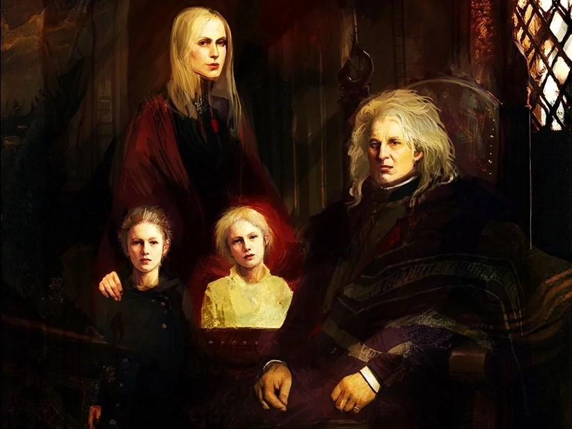

Biography
Dante and his twin brother, Vergil, were born to the legendary demon Sparda and the human Eva. The family lived in a remote home near Red Grave City. As young children, Sparda would train the boys and for much of Dante's early childhood, he didn't realize his father was a demon. Sometime before their eighth birthday, Eva gave Dante and Vergil each one half of the Perfect Amulet. Eventually, Sparda died under unknown circumstances, leaving Eva to care for the twins alone. Some time later, they were attacked by demons. Eva was killed, and though both Vergil and Dante survived, the twins were separated, and Dante believed Vergil to have died. Dante followed his mother's last wish and took up a new identity to hide from the demons, adopting the name "Anthony 'Tony' Redgrave".
Some years later, he found himself under the care of a woman posing as his mother on Morris Island. He befriended a young boy named Ernest. Tony/Dante and his "mother" were forced to leave when a demon attacked and burned down the town.
Dante is a character and the main protagonist in the video game series Devil May Cry. After returning to the Demon World, he along with his brother Vergil are the current undisputed rulers of demon world.
Portrait of Sparda, Eva, Vergil, and Dante
About
Name Data
Titles
- Devil Hunter
- Son of Sparda (スパーダの息子 Supāda no Musuko?)
- The Legendary Dark Knight
- The Strongest Demon Slayer (最強の悪魔狩人 Saikyō no Debiru Hantā?, lit. "The Strongest Devil Hunter")
- The Legendary Devil Hunter (伝説のデビルハンター Densetsu no Debiru Hantā?)
Katakana
- ダンテ
Personal Data
Species
- Hybrid (Half-demon)
Status
- Alive
Relations
Professional data
Affiliation
- Devil May Cry
Occupation
- Devil Hunter
Powers & Abilities
He can do his dougie with no effort.
Equipment
- Rebellion: A keepsake sword from his father and a manifestation of his power
- Ebony & Ivory: Dante's twin handguns, custom-built for rapid-fire
- Force Edge/Devil Sword Sparda: Dante temporarily replaced Rebellion as his main sword from the end of the events of Devil May Cry 3 until giving it to Trish at the end of Devil May Cry
- Devil Sword Dante: A blade born when Dante absorbed the Rebellion and the Sparda into his body. The weapon carries both his name and his will